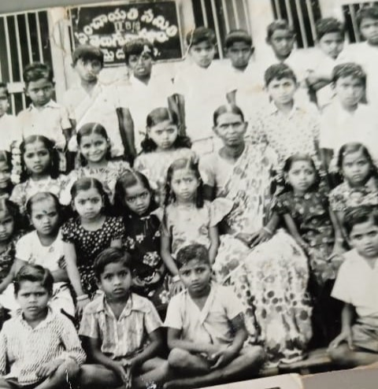
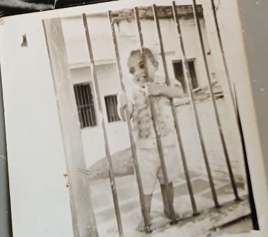

Chapter 2: The Schooling
The happiest days in any person's
life are the school days and this
is the chapter of my dad's
school life.The time you share
us your school memories your
eyes used to fill with joy....
I hope you get same joy now
life are the school days and this
is the chapter of my dad's
school life.The time you share
us your school memories your
eyes used to fill with joy....
I hope you get same joy now


Next Chapter
School Memories
-
The naughty thing is that you used
to go to your ammamma's house
to bunk the school. -
The other thing you used to do
is to hide under the bed for
whole day to bunk the class. -
Your favourite time is to dive into
the KC Canal and swim for the
long time with your friends. -
You also made a calendar of 365 days
which was really fantastic at that
age.